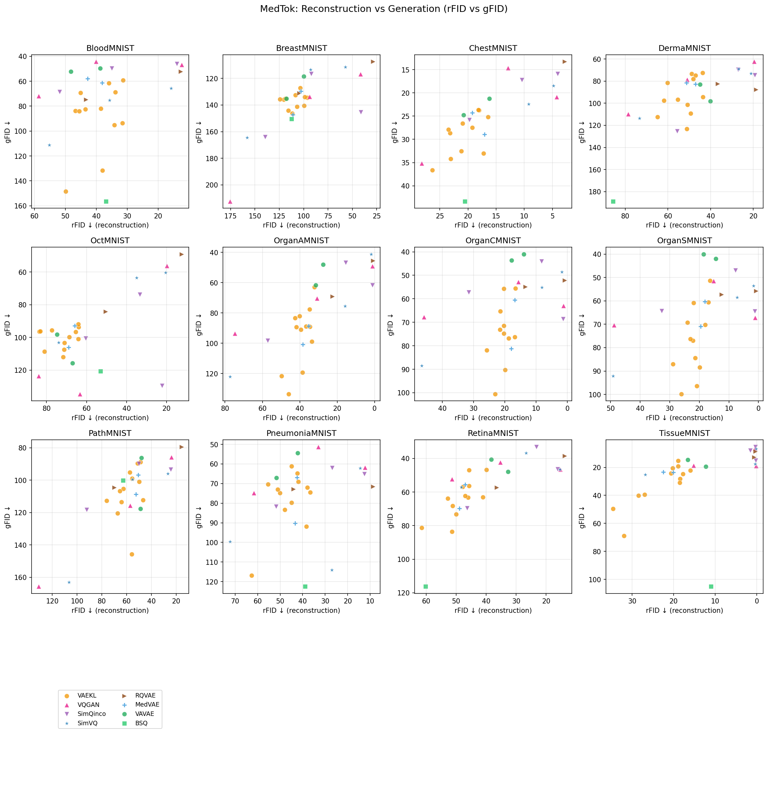
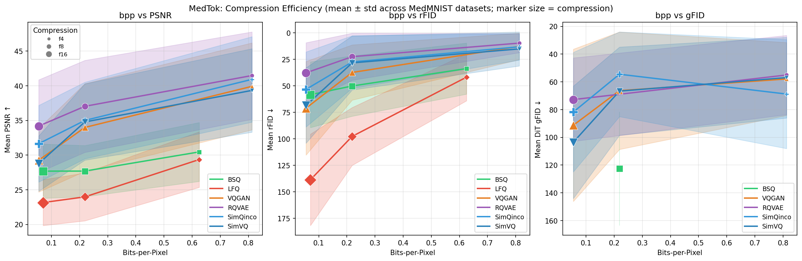
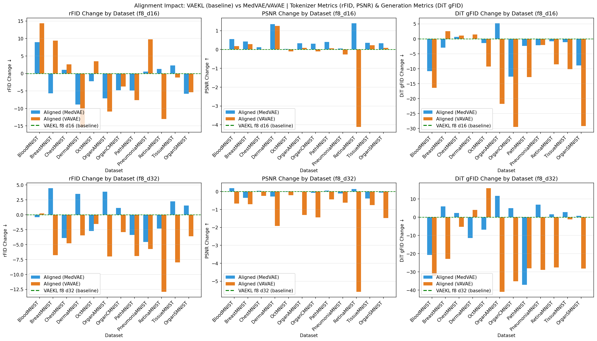
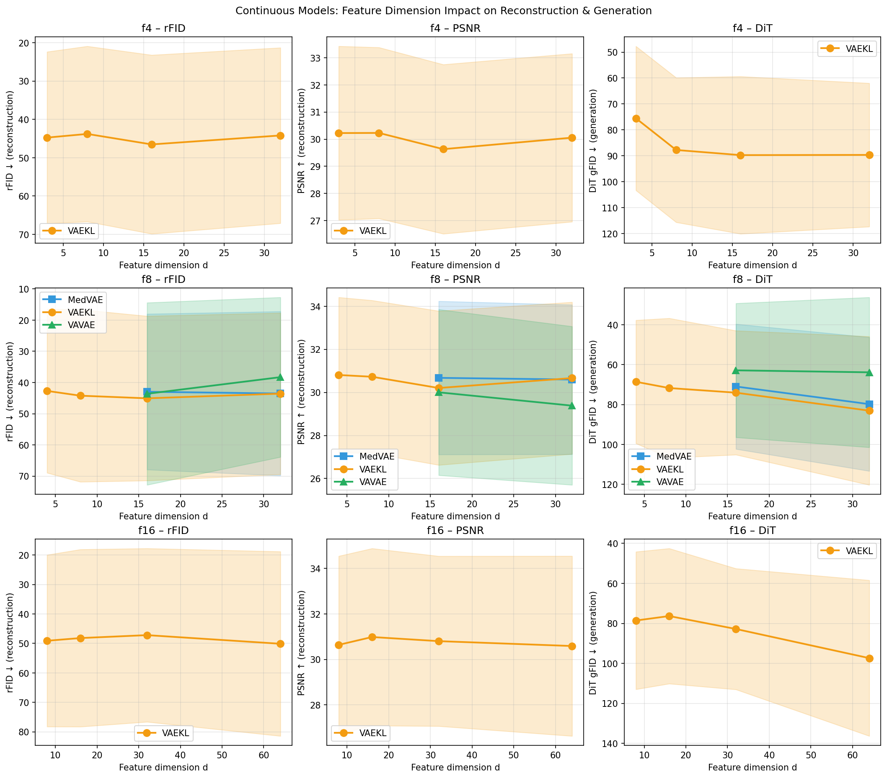
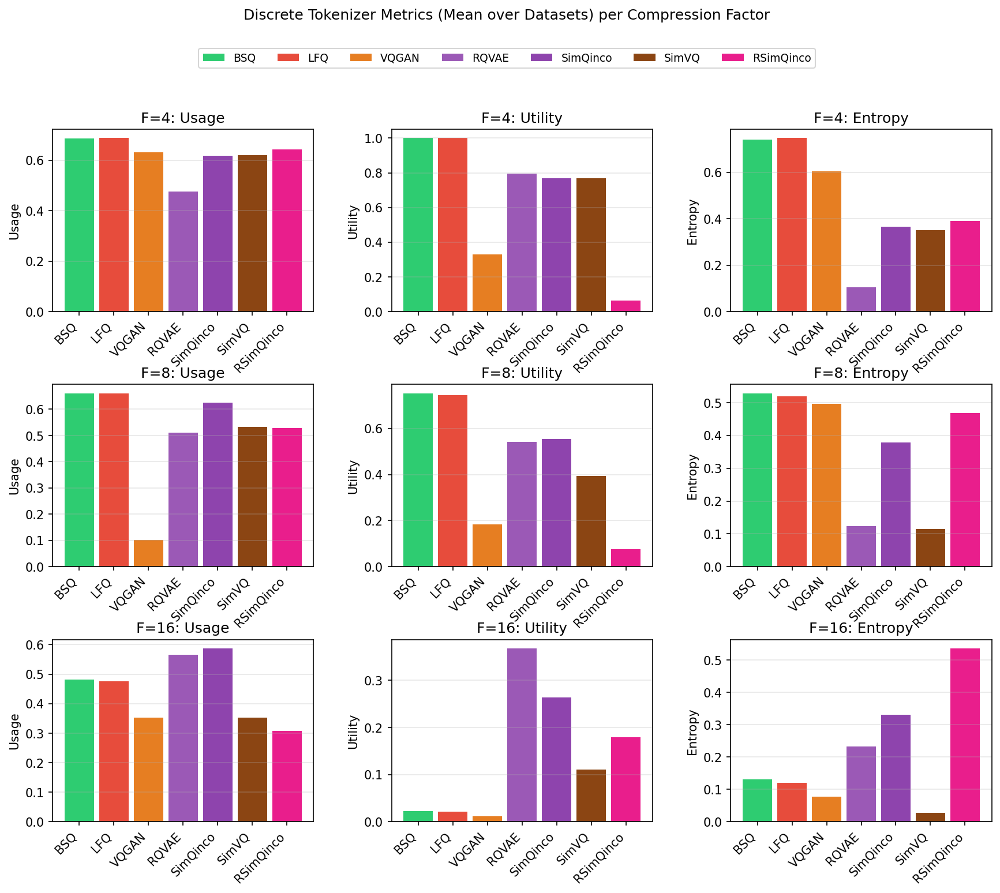

Medical image generation and analysis increasingly rely on tokenization—mapping images to compact latent representations. Recent work on natural images has revealed fundamental tensions: reconstruction FID (rFID) is often poorly correlated with generation FID (gFID); increasing latent dimension improves reconstruction but hurts generation; alignment strategies yield mixed results. Yet all such findings stem from ImageNet-scale natural imagery.
The design space of tokenizers for medical imaging remains underexplored, with no systematic benchmark to guide practitioners. We present MedLat, a comprehensive benchmark evaluating 15+ tokenizers across 12 MedMNIST datasets, spanning continuous VAEs (VAEKL, MedVAE, VAVAE), discrete quantizers (VQGAN, RQVAE, SimQinco, SimVQ, BSQ, LFQ), and alignment strategies.
Our key findings: (1) In medical imaging, rFID correlates strongly with gFID (Pearson r ≈ 0.79), contrasting with natural-image reports; (2) RQVAE, SimQinco, and SimVQ dominate discrete tokenizers in compression efficiency; (3) alignment improves reconstruction for MedVAE but degrades generation for both MedVAE and VAVAE; (4) larger latent dimensions hurt generation, consistent with the reconstruction–generation dilemma; (5) codebook statistics reveal distinct behaviors under compression.
@inproceedings{medlat2025,
title = {MedLat: The Anatomy of Medical Image Tokenization},
author = {},
booktitle = {NeurIPS},
year = {2025},
note = {Datasets and Benchmarks Track},
}